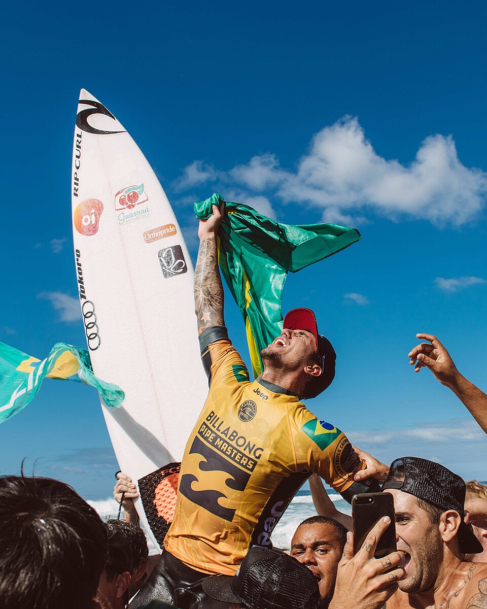

Quando Gabriel Medina conquistou seu primeiro título mundial, em 2014, o impacto foi muito maior do que a chegada de mais um campeão ao topo do esporte. O surfista de Maresias rompia uma barreira histórica: pela primeira vez, um brasileiro terminava uma temporada da elite como campeão mundial.
A conquista ajudou a mudar definitivamente a posição do Brasil dentro do surfe profissional. O país que durante décadas produziu talentos capazes de enfrentar os melhores passou a acumular títulos, disputar decisões e formar uma das gerações mais fortes do circuito internacional.
Medina esteve no centro dessa transformação. Tricampeão mundial, ele também representou o Brasil em duas edições dos Jogos Olímpicos. Sua carreira reúne resultados, momentos decisivos em ondas históricas e uma combinação de técnica, competitividade e capacidade de atuar sob pressão que marcou uma era do Championship Tour.
De Maresias para a elite do surfe mundial
Nascido em 22 de dezembro de 1993, Gabriel Medina cresceu em Maresias, praia de São Sebastião, no litoral norte de São Paulo. A região se tornaria parte inseparável de sua identidade esportiva.
Antes mesmo de se estabelecer entre os principais nomes do mundo, Medina já chamava atenção por um repertório que combinava velocidade, manobras aéreas e uma abordagem agressiva de bateria.
Sua entrada definitiva na elite aconteceu em 2011. Naquele ano, com mudanças no sistema de classificação do circuito, ele passou a disputar o Championship Tour durante a temporada e rapidamente demonstrou que não estava ali apenas para ganhar experiência.
Depois de entrar no CT durante 2011, o brasileiro venceu etapas na França e em San Francisco ainda naquela temporada. Mesmo participando de apenas parte do calendário da elite, terminou o ano na 12ª colocação.
Era o primeiro sinal de uma carreira que mudaria a relação do Brasil com o circuito mundial.
O título que mudou a história do surfe brasileiro
Três anos depois de entrar no CT, Gabriel Medina alcançou o resultado que transformou definitivamente sua carreira.
Em 2014, aos 20 anos, o brasileiro construiu uma temporada de candidato ao título desde as primeiras etapas. Venceu na Gold Coast, na Austrália, triunfou também em Fiji e chegou à reta final do campeonato na liderança.
A definição aconteceu em Pipeline, no Havaí, um dos palcos mais tradicionais e exigentes do surfe profissional. Medina confirmou o título mundial e se tornou o primeiro brasileiro campeão da elite masculina.
Não era apenas uma conquista individual. O título funcionou como símbolo de uma mudança que já vinha acontecendo dentro do circuito.
O Brasil começava a ocupar cada vez mais espaço no CT, e a geração passou a ser identificada internacionalmente como Brazilian Storm.
A tempestade brasileira deixa de ser promessa
O termo ganhou força para representar uma geração de surfistas brasileiros que ampliou a presença do país na elite e começou a enfrentar as potências tradicionais do esporte com outra regularidade.
Medina tornou-se o primeiro campeão em 2014. Adriano de Souza, o Mineirinho, conquistou o título na temporada seguinte. Mais tarde, outros brasileiros também chegariam ao topo, consolidando uma mudança estrutural no circuito masculino.
Medina, porém, ainda estava longe de encerrar sua coleção de títulos.
Campeão mundial no maior palco do surf
Quatro anos depois da primeira conquista, Medina voltou a comandar a classificação mundial.
A temporada de 2018 terminou novamente no Havaí, mas desta vez o brasileiro conseguiu juntar dois feitos no mesmo dia: confirmou seu segundo título mundial e venceu pela primeira vez o Pipe Masters.
A campanha decisiva em Pipeline reforçou uma característica que acompanharia Medina durante toda a carreira: sua capacidade de produzir performances de alto nível quando a margem para erro fica menor.
Nas quartas de final daquele evento, por exemplo, Medina conseguiu uma nota 10 em Backdoor durante a caminhada que terminaria com o título. Depois, passou por Jordy Smith na semifinal e derrotou Julian Wilson na decisão para fechar a temporada como bicampeão mundial.
Se 2014 mostrou que um brasileiro podia conquistar o mundo, 2018 confirmou que Medina não havia chegado ao topo por acaso.
O tricampeonato
O terceiro título veio em 2021. Medina fez uma temporada dominante e chegou ao WSL Finals, em Lower Trestles, na Califórnia, como número 1 do ranking.
Na decisão do título, enfrentou Filipe Toledo em um confronto totalmente brasileiro. Medina venceu as duas baterias do Title Match e conquistou seu terceiro campeonato mundial.
Na primeira bateria, somou 16,30 pontos contra 15,70 de Filipe. Na segunda, marcou 17,53 contra 16,36.
O resultado colocou Medina em outro patamar histórico. Já não se tratava apenas do pioneiro que havia aberto o caminho em 2014. Ele havia construído uma era própria dentro do esporte.
Os três títulos:
- 2014 — primeiro título mundial e primeiro campeonato conquistado por um brasileiro na elite masculina
- 2018 — segundo título mundial e vitória no Pipe Masters
- 2021 — terceiro título mundial, conquistado no WSL Finals em Lower Trestles
As vitórias nas etapas do tour
Além dos três títulos mundiais, Gabriel Medina construiu uma carreira marcada pela capacidade de vencer em cenários completamente diferentes. Até agosto de 2026, o brasileiro soma 18 conquistas em eventos do Championship Tour, considerando também o WSL Finals de 2021, número que ajuda a dimensionar sua longevidade entre os principais competidores do mundo.
A primeira vitória veio logo em sua temporada de estreia na elite, em 2011, no Quiksilver Pro France. A partir dali, acumulou triunfos em ondas de performance, tubos pesados, reef breaks e até piscina de ondas artificiais.
As 18 conquistas de Medina em eventos da elite:
- 2011 — Quiksilver Pro France
- 2011 — Rip Curl Search, em San Francisco
- 2014 — Quiksilver Pro Gold Coast
- 2014 — Fiji Pro
- 2014 — Billabong Pro Tahiti
- 2015 — Quiksilver Pro France
- 2016 — Fiji Pro
- 2017 — Quiksilver Pro France
- 2017 — MEO Rip Curl Pro Portugal
- 2018 — Tahiti Pro Teahupo'o
- 2018 — Surf Ranch Pro
- 2018 — Billabong Pipe Masters
- 2019 — Corona Open J-Bay
- 2019 — Freshwater Pro, no Surf Ranch
- 2021 — Rip Curl Narrabeen Classic
- 2021 — Rip Curl Rottnest Search
- 2021 — Rip Curl WSL Finals, em Lower Trestles
- 2023 — Margaret River Pro
Alguns desses títulos têm peso especial na construção de sua trajetória. Medina venceu três vezes na França, conquistou duas etapas em Fiji e duas em Teahupo'o, além de triunfar em Jeffreys Bay, Pipeline e Margaret River. A variedade de ondas entre suas conquistas reforça uma das características que explicam seu sucesso: apesar de ter ficado conhecido desde jovem pelo repertório aéreo, Medina conseguiu vencer também em algumas das ondas mais técnicas e exigentes do circuito.
A trajetória olímpica
A entrada do surfe no programa olímpico abriu outro capítulo importante da carreira de Medina.
Nos Jogos de Tóquio 2020, realizados em 2021, o brasileiro chegou como um dos grandes favoritos. Avançou até a semifinal, mas foi derrotado pelo japonês Kanoa Igarashi.
Na disputa pela medalha de bronze, Medina enfrentou Owen Wright. O australiano venceu por 11,97 a 11,77, deixando o brasileiro na quarta colocação. O ouro ficou com outro integrante da geração brasileira, Italo Ferreira.
Três anos depois, Medina finalmente chegou ao pódio olímpico.
Nos Jogos de Paris 2024, com as baterias de surfe realizadas em Teahupo'o, no Taiti, o brasileiro conquistou a medalha de bronze.
Além do resultado, sua participação produziu uma das imagens mais reconhecidas daquela edição dos Jogos: Medina no ar ao lado da prancha, apontando para cima, em fotografia registrada por Jerome Brouillet. O registro se espalhou internacionalmente e ampliou ainda mais a dimensão do surfista fora do próprio esporte.
Do ponto de vista competitivo, a medalha adicionou ao currículo de Medina uma conquista que havia escapado em Tóquio.
O estilo dentro d'água
Seu surfe ajudou a representar uma evolução técnica da geração brasileira. Desde o início da carreira, os aéreos apareceram como uma de suas principais armas, mas reduzir Medina a esse repertório seria uma leitura incompleta.
Ao longo dos anos, ele demonstrou competitividade em diferentes tipos de onda.
Seu histórico em Pipeline é um exemplo. Em Teahupo'o, outra onda de enorme exigência técnica e física, construiu parte importante de sua reputação internacional.
Medina também se destacou pela capacidade de administrar baterias. Prioridade, escolha de ondas, leitura do relógio, posicionamento e pressão psicológica sobre o adversário se tornaram componentes importantes de seu repertório competitivo.
Essa combinação fez dele um surfista especialmente perigoso em confrontos eliminatórios.
Veja abaixo algumas ondas surfadas:
A pausa na carreira
A trajetória de Medina não foi construída apenas em temporadas completas e disputas por títulos.
Depois do tricampeonato de 2021, o surfista decidiu não disputar as primeiras etapas do circuito de 2022. Na época, explicou publicamente que precisava cuidar da saúde mental e também se recuperava de um problema físico no quadril.
A decisão o afastou das cinco primeiras etapas daquela temporada antes do retorno às competições.
Esse período é importante para compreender a trajetória, a porque foi uma interrupção diferente daquela que aconteceria três anos depois.
Em 2025, Medina não tirou um ano sabático. O brasileiro não decidiu simplesmente fazer um ano sabático.
Em janeiro daquele ano, Medina sofreu uma lesão no tendão do músculo peitoral maior do lado esquerdo enquanto treinava em Maresias. O surfista passou por cirurgia e ficou impossibilitado de disputar a temporada do Championship Tour.
Portanto, existem duas interrupções diferentes na trajetória recente do tricampeão: a pausa iniciada em 2022, relacionada ao cuidado com a saúde mental e recuperação física, e a ausência de 2025 provocada por uma lesão e cirurgia.
O retorno ao circuito em 2026
Depois de perder a temporada de 2025, Medina recebeu da WSL um wildcard para disputar o Championship Tour deste ano.
O retorno colocou novamente na elite um dos surfistas mais vitoriosos de sua geração. Medina e John John Florence, também tricampeão mundial, voltaram ao circuito depois de passarem a temporada anterior fora por motivos diferentes.
E Medina rapidamente voltou a aparecer em uma decisão.
Em abril, foi vice-campeão em Margaret River ao perder a final para o australiano George Pittar. O resultado levou o brasileiro à liderança do ranking após as duas primeiras etapas da temporada.
Foi uma resposta competitiva importante depois de uma temporada inteira longe da elite. Mais do que simplesmente retornar ao CT, Medina mostrou novamente capacidade para chegar às fases finais e enfrentar a nova geração que surgiu enquanto ele esteve afastado.
O tamanho na história do surfe brasileiro
Ao alcançar o tricampeonato mundial e se manter por tantos anos entre os protagonistas da elite, ele passou a ocupar um espaço reservado a poucos nomes da história moderna da modalidade. Em outra dimensão de longevidade e domínio está Kelly Slater, maior referência histórica do circuito mundial de surfe, cuja carreira ajuda a dimensionar o nível de exigência necessário para permanecer no topo por diferentes gerações.
A carreira de Gabriel Medina representa um dos capítulos mais importantes da transformação do Brasil em potência mundial do surfe.
Seus principais feitos ajudam a dimensionar essa trajetória:
- Três títulos mundiais: 2014, 2018 e 2021
- Primeiro brasileiro campeão mundial da elite masculina
- Medalha de bronze nos Jogos Olímpicos de Paris 2024
- Quarto lugar nos Jogos Olímpicos de Tóquio
- Campeão do Pipe Masters em 2018
- 18 vitórias em etapas do tour
- Protagonista da geração Brazilian Storm
Os números, porém, contam apenas parte da história.
Medina apareceu em um momento no qual o Brasil tentava transformar talento individual em protagonismo coletivo. Sua conquista de 2014 acelerou esse processo e ajudou a criar uma referência concreta para os surfistas brasileiros que chegavam atrás dele.
Depois vieram novos campeões, novas finais brasileiras e uma presença muito maior do país na disputa pelos principais resultados da modalidade.
Por isso, o peso histórico de Gabriel Medina ultrapassa seus três títulos mundiais. Sua carreira está diretamente ligada ao período em que o Brasil deixou de tentar chegar ao topo do surfe profissional e passou efetivamente a ocupá-lo.
E mesmo depois de títulos mundiais, duas participações olímpicas, uma medalha e diferentes interrupções na carreira, o retorno ao circuito mostrou que sua história competitiva ainda não havia terminado. Em uma geração brasileira que cresceu, se renovou e produziu novos campeões, Medina continua sendo uma das figuras centrais para entender como o Brasil mudou a hierarquia do surfe mundial.